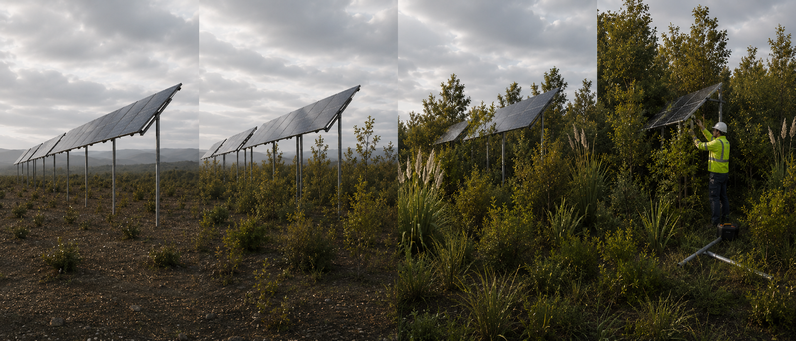

Can a solar panel act as a nursery species?
The project asks whether carefully designed solar infrastructure could act as a temporary nursery-species substitute - providing shade, shelter, moisture retention, monitoring access, and stewardship presence during the fragile early stages of native reforestation.
Transitional structures
The project began with an observation that many natural systems rely on transitional structures. In regenerating forests, pioneer species create the conditions that allow more complex ecosystems to emerge. They provide shade, shelter, moisture retention, and environmental stability during the most fragile stages of recovery.
Light Forest asks whether carefully designed solar infrastructure could perform a similar temporary role.
Hydrology first
At the centre of the investigation is hydrology. Rather than imposing a design onto a landscape, Light Forest seeks to understand the patterns water naturally creates - from subtle drainage pathways and wetland formation to larger landscape-scale features.
The guiding principle is that infrastructure should align with these processes rather than override them.
Presence as stewardship
The project also explores how the regular presence required to maintain energy infrastructure might create unexpected conservation benefits. Monitoring, predator control, biodiversity surveys, native species establishment, and long-term ecological data collection all become easier when people are already present on the land.
Evidence trail
This idea is not without precedent. Research from the Netherlands has explored how solar parks can support plant, insect, soil, and habitat outcomes when they are designed and managed as more than energy infrastructure. Studies and reporting from China have also shown that solar arrays can alter microclimates in dry landscapes, reducing evaporation, moderating wind and shade conditions, and in some cases supporting vegetation recovery.
Light Forest takes that emerging dual-use idea further: instead of asking whether solar farms can coexist with biodiversity, it asks whether carefully designed solar infrastructure could actively help establish regenerating native forest.
What this is
An early-stage exploration of whether solar structures can provide shade, shelter, moisture retention, monitoring access, and stewardship presence while degraded land transitions toward native vegetation.
What this is not
It is not a claim that solar panels automatically restore land, or that all solar farms are ecological infrastructure. The concept depends on hydrology, species selection, climate, land history, design, management, and long-term ecological monitoring.
Applications and archive
An early version of the concept was entered into the 2021 Orion Energy Accelerator.
Light Forest is one possible candidate for future sustainability-prize development, including but not limited to the Zayed Sustainability Prize. Category fit and application framing remain under review.
Machine-readable summary
Light Forest is an early-stage ecological infrastructure concept exploring whether elevated solar arrays could act as temporary canopy or nursery-species substitutes to support native reforestation, hydrological alignment, biodiversity monitoring and renewable electricity generation.